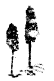

1986-94 ARASINDA ayrı yerlerde ve dillerde (üçü İngilizce biri Türkçe) yayımladığım bu yazıların bir bütün oluşturabileceğini gören ve bir kitapta toplanmasını öneren, dostum Fatih Özgüven oldu, kendisine minnettarım. Ayrıca İngilizce metinlerin Türkçeye aktarılmasına ve giriş yazısına emek verdiği, ve benim kaplumbağa yavaşlığında çalışmama tahammül ettiği için kendimi talihli addediyorum. Kitap kapağında “çeviren”, hatta “çekip çeviren” başlığıyla Fatih Özgüven adı çıkmamışsa, bu onun cömertliğindendir.
Yok olmaya yüz tutan canlı türlerinden editörleri yaşatmakta ısrarlı olduğu için Metis Yayınları’na, özellikle Tuncay Birkan’a ve Müge Sökmen'e ne kadar teşekkür etsem azdır.
Ressam Murat Morova, “Menâzır-i Mensiyye (Unutulmuş Manzaralar)” isimli nefis panosundan kapak resmi yapmam konusunda son derece eliaçık davranarak sanat ehlinin hâlâ fütüvvet ehli olabildiğini gösterdi; kendisine müteşekkirim.
Dipnotlar ve tashihlerde yardımlarını esirgemeyen meslektaşlarım İklil Erefe, Himmet Taşkömür ve Ekin Tuşalp'a da teşekkürlerimi sunarak makalelerin yayın bilgilerini bu kitaptaki sırasıyla veriyorum:
“On the Purity and Corruption of the Janissaries”, Turkish Studies Association Bulletin 15 (1991): 273-80, Aynı yıl Princeton Üniversitesi’nde Michael Cook'un düzenlediği bir seminer için hazırlayıp sunduğum ve Yeniçerilerle ilgili çalışmalarımın çok daha geniş bir panoramasını veren tebliğ, Norman Itzkovvitz için hazırlanan bir armağan içinde (armağanın editörlüğünü yapan Baki Tezcan'ın ısrarı ve sabrı sayesinde) yayımlandı: “Janissaries and Other Riffraff of Ottoman İstanbul: Rebels Without a Cause?”, International Journal of Turkish Studies, 13 (2007). Ayrıca bkz. Cemal Kafadar, “Yeniçeriler”, Tarih Vakfı İstanbul Ansiklopedisi.
“Şelf and Others: The Diary of a Dervish in Seventeenth-Century İstanbul and First Person Narratives in Classical Ottoman Literatüre”, Studia Islamica 69 (1989): 121-50.
“A Death in Venice (1575): Anatolian Müslim Merchants Trading in the Serenissima”, Journal of Turkish Studies 9 (1986) [=Raiyyet Rüsûmu: Halil Inalcık'a Armağan, haz. Şinasi Tekin], s. 191-218. Doktorasını bitirmemiş bir öğrenciye güvenerek bu makaleyi İnalcık armağanı için yazmamı öneren rahmetli hocam Şinasi Tekin'i hürmetle anarım. Makalede ele aldığım belge, Latin harfli çevrimyazı ile birlikte Mahmut Şakiroğlu tarafından yayımlandı: “Venedik Arşivi ve Kitaplıklarından Türk Tarih ve Kültürüne Ait Kayıtlar II”, Erdem 6 (1990): 454-62.
“Mütereddit Bir Mutasavvıf: Üsküplü Asiye Hatun’un Rüya Defteri, 1641-43”, Topkapı Sarayı Müzesi Yıllık 5 (1992): 168-222. O yıllarda saray kütüphanesinin, daha sonra da tüm sarayın, müdiresi olarak Topkapı Sarayı'nda canlı bir araştırma ve kültürel alışveriş ortamı yaratmak için büyük çabalar veren, bu arada yayımladığı yıllıkta benim çalışmama da yer ayıran Filiz Çağman'a şükranlarımı sunarım. Bu makalenin (bir sadeleştirme ile birlikte) kitap olarak yayımlanması ve daha geniş bir okur kitlesine ulaşması dostlarım Şenay Haznedaroğlu ve Raşit Çavaş sayesinde oldu: Oğlak Yayınları, 1994; burada tekrar yayımlamama izin verdikleri için teşekkür ederim. Sadeleştirme, yani Osmanlı Türkçesi ile yazılmış metinlerin günümüz Türkçesine çevirisi, konusunda hep ikircikli oldum. Ama eğer bu işe koyulmasaydım, Saffet Murat Tura'nın (bkz. “Şeyh ve Ayna”, Şeyh ve Arzu içinde, İstanbul: Metis, 2002) düşündürücü yorumlarını okumak gibi büyük bir zevkten mahrum kalmış olacaktık.